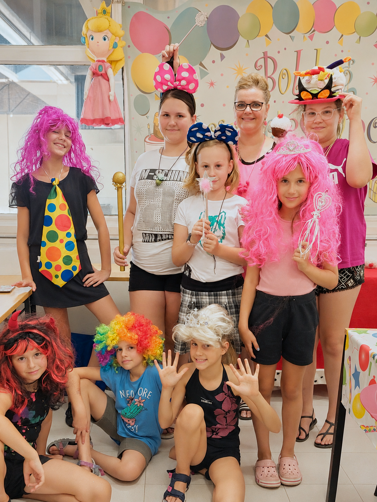

Közös játékok
Vidám, együtt játszható játékok, amelyekbe mindenki bekapcsolódhat.
Gyermekanimáció születésnapokra
Vidám játékok, közös nevetések és emlékezetes pillanatok a gyerekek nagy napjára.
Gyermekanimátorként változatos, játékos programokkal gondoskodom a jó hangulatról, a gyerekek életkorához, létszámához és a helyszínhez igazodva. Így az ünnepelt és a kis vendégek is önfeledten élvezhetik a születésnapot.
Ajánlatot kérek Meglepetés ajándék
Meglepetés ajándékMiközben a gyerekek játszanak, nevetnek és együtt ünnepelnek, neked nem kell azon gondolkodnod, mivel foglald le őket. A játékok vezetését és a programok lebonyolítását én vállalom, így te is nyugodtabban élvezheted a születésnapot.
A közös móka során figyelek arra, hogy mindenki bekapcsolódhasson, az ünnepelt pedig igazán különlegesnek érezhesse a nagy napját.
Játékok és programok
A közös játékoktól a kincskeresésen át a kreatív alkotásig sokféle program közül választhatunk. A játékokat mindig a gyerekek életkorához, létszámához és a helyszínhez igazítom, hogy mindenki jól érezze magát.
Vidám, együtt játszható játékok, amelyekbe mindenki bekapcsolódhat.
Játékos megmérettetések, ahol az együttműködés és a jókedv a lényeg.
Mozgalmas kihívások, amelyek próbára teszik a gyerekek ügyességét.
Rejtett nyomok, izgalmas feladványok és közös kalandok.
Kreatív alkotás, ahol a gyerekek saját kis műveket készíthetnek.
Színes minták és csillogó díszítések a szülinapra, külön kérhető kiegészítésként.
Ki van a Csiriviri mögött?
Évi vagyok, a Csiriviri megálmodója. Óvodapedagógusként mindig is szerettem gyerekekkel foglalkozni, együtt játszani és új élményeket szerezni velük. Később egy kultúrházban kezdtem gyerekzsúrokat és tematikus születésnapi programokat szervezni, ahol igazán megtaláltam azt, amiben örömömet lelem.
Hogy minél változatosabb és izgalmasabb programokkal készülhessek, játékanimátori képzést is végeztem. Azóta is szívesen keresek új játékötleteket, és minden szülinapot az adott gyerekcsapathoz igazítok. Számomra a legszebb pillanat, amikor látom, hogy a gyerekek önfeledten játszanak, nevetnek, és az ünnepelt igazán a figyelem középpontjában érezheti magát.
És hogy a szülinapból kézzelfogható emlék is maradjon, az ünnepeltet mindig meglepem egy apró, saját kezűleg készített ajándékkal. Így a közösen átélt élmények mellett egy kis darabka Csirivirit is magával vihet emlékbe.

Hogyan működik?
Az időpontot, a helyszínt, az ünnepelt életkorát és a gyerekek létszámát.
Kiválasztjuk a gyerekekhez és a helyszínhez illő játékokat, programokat.
Megbeszéljük az időtartamot, az árat és a fontos tudnivalókat.
A megbeszélt időpontban érkezem, és kezdődhet a közös móka!
Árak és tudnivalók
Minden szülinap más, ezért a játékokat és a programokat a gyerekek életkorához, létszámához és az elképzeléseitekhez igazítom.
2 órás szülinapi program
25 000 Ft-tólA pontos díj a helyszíntől, a gyerekek létszámától és a választott programoktól függ.Budapest egész területén, legalább 2 órás időtartamtól vállalok szülinapi programokat, a helyszín adottságaihoz igazodva.
Budapest 50 km-es körzetében, legalább 3 órás program esetén vállalok kiszállást. Kiszállási díj felmerülhet.
A programot az igényeitekhez igazítom, a részleteket és a költségeket pedig előre egyeztetjük.
Rólam mondtátok
Pár visszajelzés a szülinapi élményekről.
„Mindenkitől azt kaptuk, hogy jól érezték magukat a gyerekek – de szerintem látszott is. Kitti nagyon boldog azóta is a fellegekben száll. Remélem még találkozunk!”Szülői visszajelzés · Gyerekzsúr
„Szeretném megköszönni a csodás arcfestést! 🥰 A gyerekek nagyon élvezték, mindenki nagy örömmel választott a szebbnél szebb mintákból, este le sem akarták mosni. ❤️ Nagyon kedves, ügyes és kreatív vagy, igazán színesebbé és vidámabbá tetted a születésnapi zsúrt! Köszönjük szépen, szívből ajánlunk!”Szülői visszajelzés · Arcfestés

Jó tudni
3–14 éves kor közötti gyerekeknek tartok szülinapi animációs programokat. A játékokat a gyerekek életkorához igazítom, hogy mindenki jól érezze magát, és örömmel kapcsolódjon be a közös játékba.
Nincs meghatározott minimumlétszám, de a közös játékok ideálisan 6 gyerektől működnek igazán jól. Legfeljebb 20 gyerekkel vállalok szülinapi animációt. A játékokat úgy választom ki, hogy kisebb és nagyobb társaságban is mindenki bekapcsolódhasson.
A programot tarthatom nálatok otthon, jó idő esetén a kertben, vagy más, általatok választott helyszínen. A játékokat mindig a hely adottságaihoz igazítom, ezért a helyszínt előre egyeztetjük.
A program időtartamát te választhatod meg, attól függően, hogyan tervezitek az ünneplést. Budapesten legalább 2 órás, Budapest 50 km-es körzetében pedig legalább 3 órás programot vállalok. Az egyeztetéskor megbeszéljük, mennyi idő illik legjobban a tervezett programhoz.
A díj az időtartamtól, a gyerekek létszámától és életkorától, valamint a helyszíntől függ. A kétórás program díja 25 000 Ft-tól indul; hosszabb időtartam esetén az ár is magasabb. Távolabbi helyszín esetén kiszállási díj is felmerülhet. A pontos árat minden esetben előre egyeztetem veled.
Igen, a szülinapi animáció arcfestéssel vagy csillámtetoválással is kiegészíthető. Írd meg ajánlatkéréskor, melyik érdekel benneteket, és előre egyeztetjük, hogyan illeszthető be az ünneplésbe.
Kapcsolat
Írd meg, mikor és hol ünnepeltek, hány évesek a gyerekek, és hányan lesznek. Ha van már elképzelésed a programokról, azt is szívesen olvasom. Írj üzenetet a kapcsolati űrlapon, vagy keress bátran az alábbi elérhetőségeken, és beszéljük meg a részleteket!
 Budapest környékén
Budapest környékén